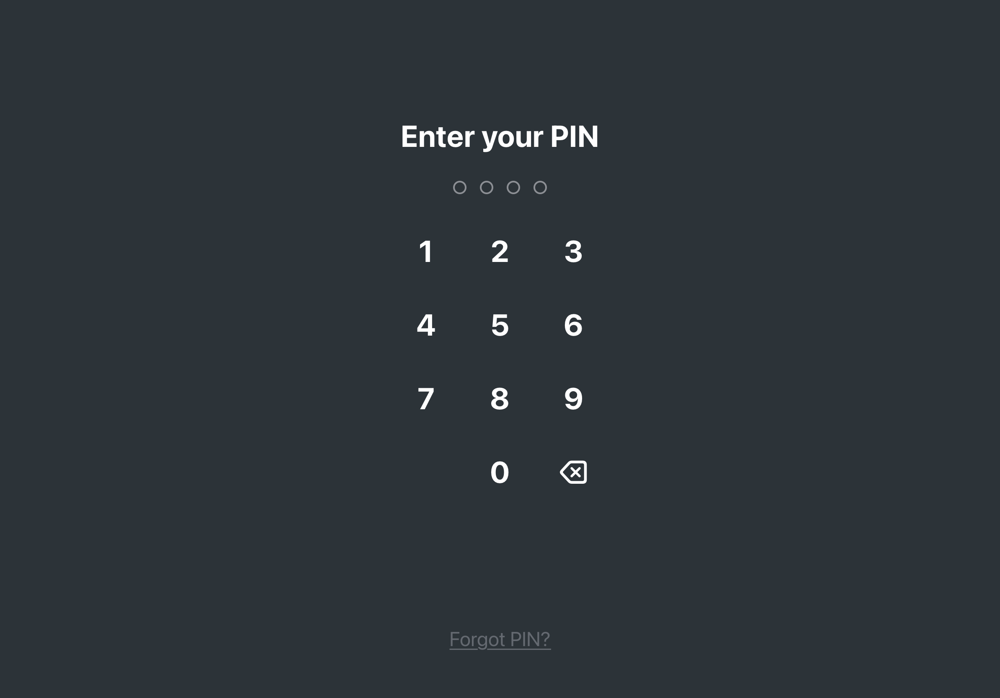
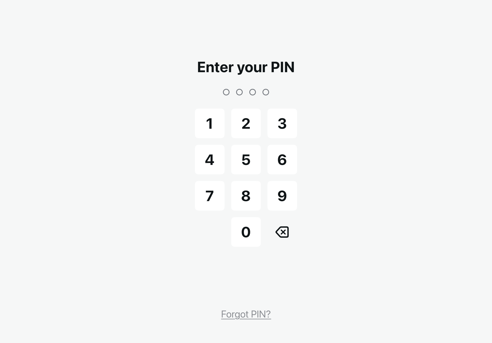
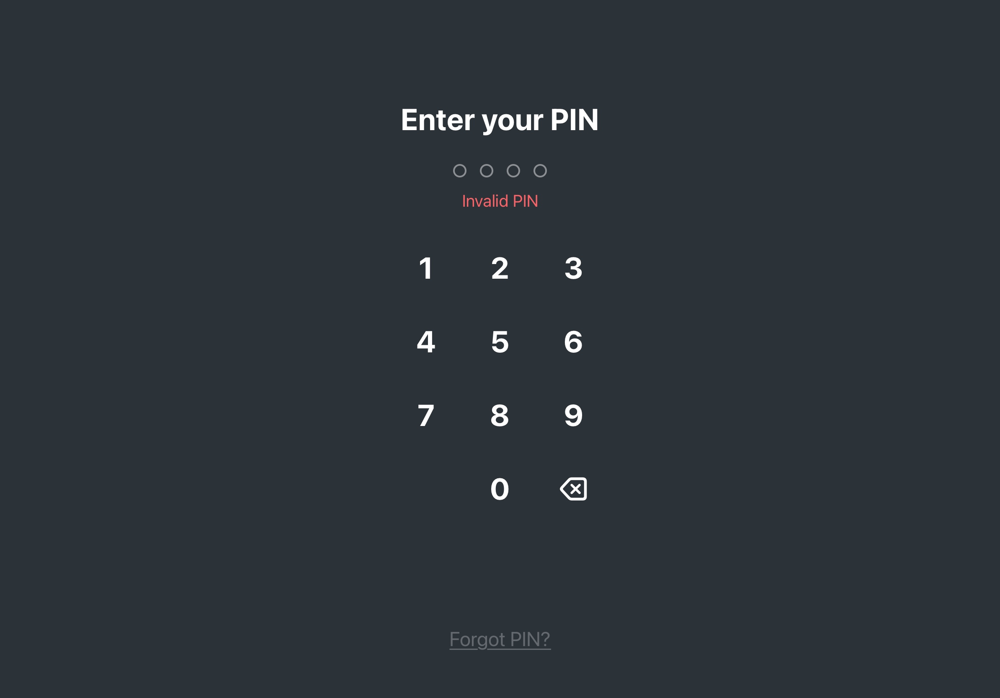
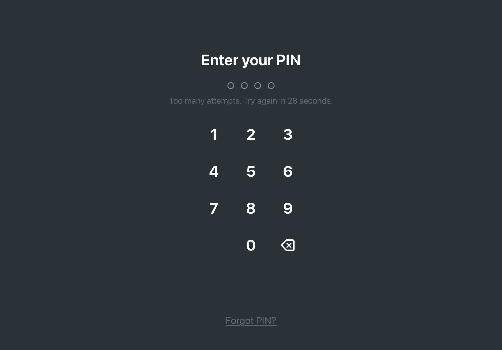

2
Lock & Unlock: PIN-based staff switching Shared
Admin taps "Lock POS" in menu. Lock screen appears. Any staff enters PIN. Auto-locks after 5 min inactivity. "Forgot PIN?" for help. Loading state during remote verification.
Idle: Clean lock screen. "Enter your PIN" + numpad + "Forgot PIN?" link.

Dark

Light
Error: Wrong PIN. Dots shake, red error message.

Dark
Lockout: 5 failed attempts. Numpad disabled, countdown timer.

Dark
Loading: Remote PIN verification in progress. Dots pulse, numpad disabled.
Dark
Accessibility: XXL dynamic type.

A11y XXL